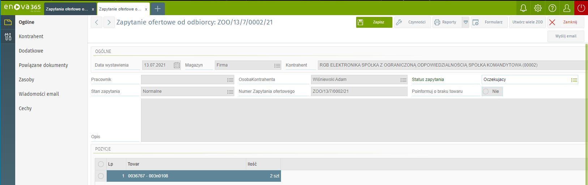

Dokumentacja powiadomień do klientów o zmianie statusu zamówienia
Wstęp:
Mechanizm ten powiadamia klieta o zmianie statusu zamówienia.
Sposób działania
W pierwszej kolejności musimy dodać statusy zamówień. Następnie do tych statusów podpinamy szablony wiadomości. Od tego momentu mechanizm będzie w stanie wysyłać wiadomości do klientów. Na formularzu dokumentu zapytania zostało dodane nowe pole 'Status zapytania'.

Po kliknięciu w te pole wyświetli się nam okienko ze zdefiniowanymi przez nas statusami. Wybieramy interesujący nas status, wypełniamy dane na dokumencie w sposób standardowy i klikamy zapisz zamknij. W momencie zapisania dokumentu mechanizm znajdzie ten dokument i sprawdzi jaki został mu przydzielony status a następnie utworzy w zakładce 'Wiadomość' nowy wpis wiadomości automatycznej z czasem wysłania za 5 minut według szablonu wiadomości który został przydzielony do tego statusu. Ważną informacją jest to że zamówienie nie może mieć dwa razy tego samego statusu oraz to że te pole jest wymagane aby można było zapisać dokument.